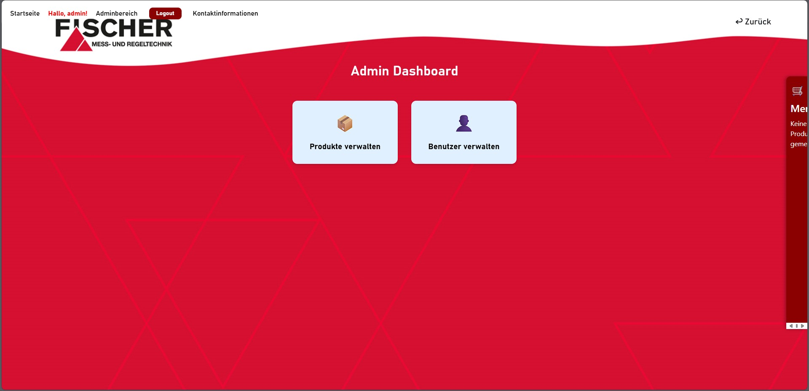
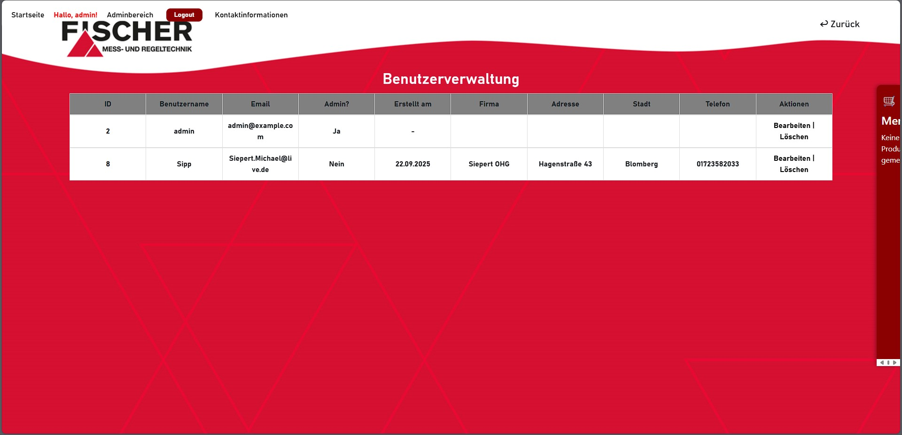
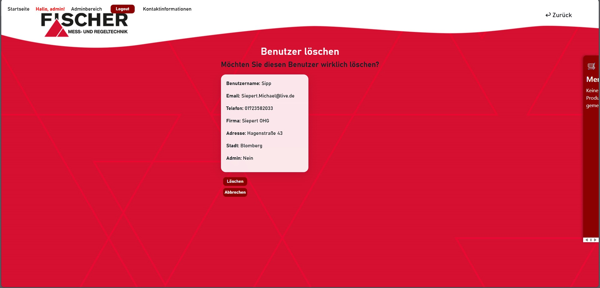
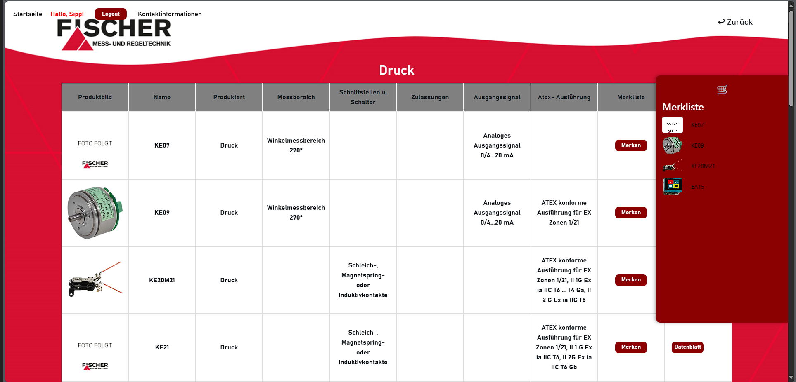
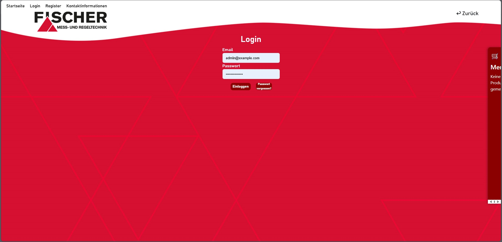
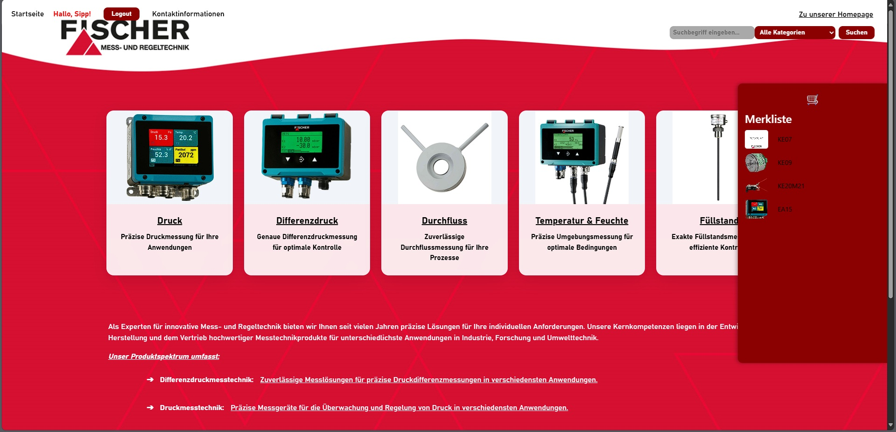
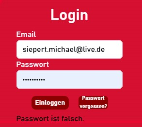
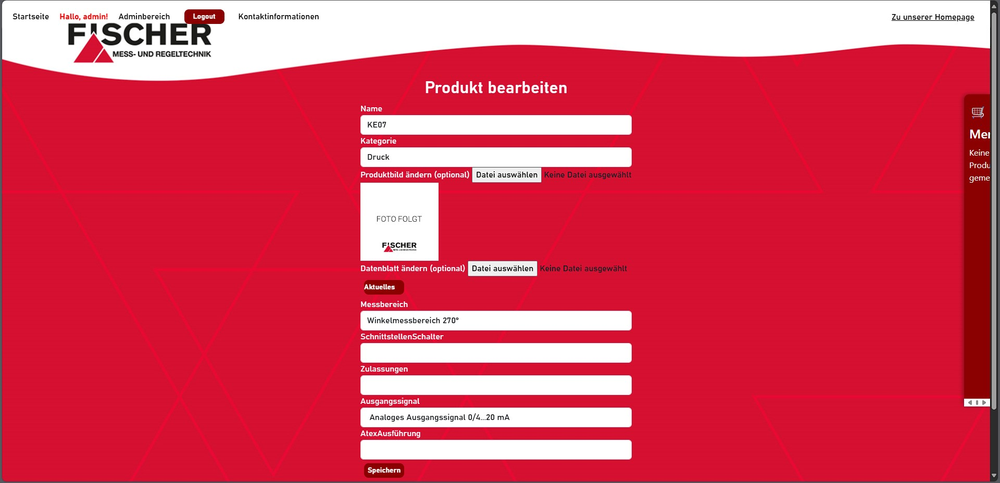
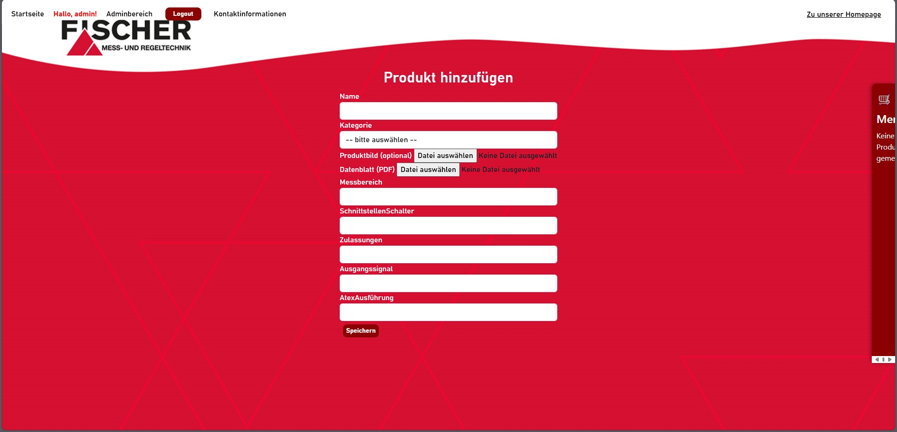
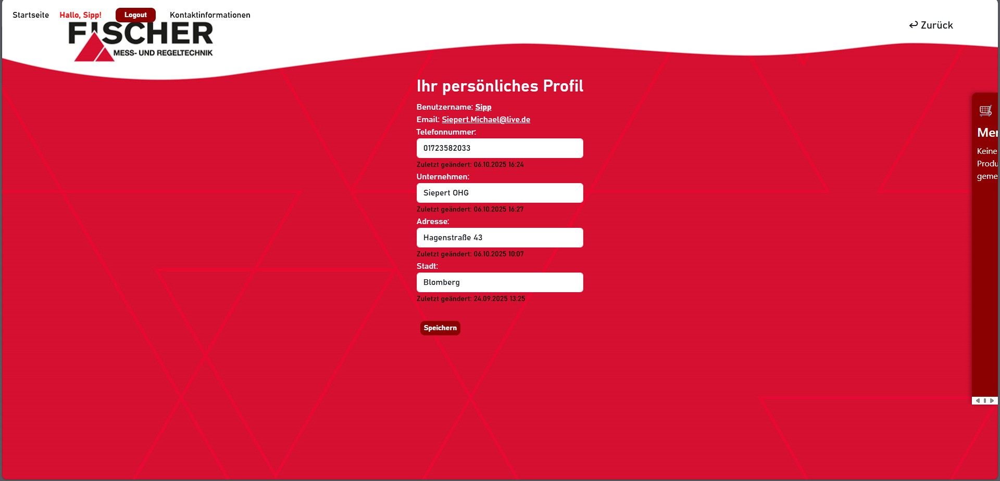

Der Fischer Produktkatalog ist mein Abschlussprojekt und eine WebApp auf Basis von ASP.NET MVC,
die einen Produktkatalog strukturiert darstellt und verwaltet. Ziel war eine praxisnahe Anwendung,
die zwei Perspektiven abdeckt:
Kunden sollen Produkte schnell finden, vergleichen und merken können - Administratoren sollen Inhalte
und Nutzer zentral pflegen, ohne an der Datenstruktur "vorbei" zu arbeiten.
Dabei lag mein Fokus auf einer klaren Benutzerführung (Kategorien als Einstieg, Suche/Filter als Schnellzugriff),
einer sauberen Trennung der Verantwortlichkeiten im MVC-Pattern und einer Datenhaltung in MySQL, die für typische
Katalog-Anforderungen ausgelegt ist.
Tech-Stack
Funktionsumfang der Kundenseite
Kategorien als Einstieg:
Auf der Startseite werden die Produktbereiche über Kategorie-Cards dargestellt. Dadurch sieht der Nutzer
sofort die Struktur des Katalogs und kann ohne Umwege in einen Bereich einsteigen.
Suche & Filter:
Zusätzlich gibt es eine Suche und eine Filterung über kategorien, um Produkte gezielt zu finden.
Das ist besonders hilfreich, wenn der Katalog wächst und man nicht mehr "durchklicken" möchte.
Merkliste (Session-basiert):
Ein zentrales Feature ist die Merkliste, in die Nutzer Produkte während der Session speichern können.
Die Merkliste ist als seitliches Element sichtbar, wodurch man schnell zwischen Katalog und vorgemerkten
Produkten wechseln kann - ohne den aktuellen Kontext zu verlieren.
Profilverwaltung:
Angemeldete Nutzer können ihr Profil anpassen (z.B. Kontaktdaten/Firmendaten). Das ist in der Praxis
wichtig, wenn Profile gepflegt werden sollen, ohne dass ein Admin eingreifen muss.
Funktionsumfang des Admin
Login & Rollenlogik:
Die Anwendung enthält ein Login-System und einen Adminbereich, der separate Verwaltungsfunktionen
bereitstellt. Nach dem Login führt ein Admin-Dashboard zu den zentralen Verwaltungsbereichen.
Benutzerverwaltung:
Admins können Benutzer übersichtlich verwalten (inkl. Bearbeiten/Löschen). Dazu gehören typische
Verwaltungsdetails wie E-Mail, Firma, Adresse, Telefon sowie die Admin-Kennzeichnung.
Produktpflege:
Im Adminbereich können Produkte angelegt und bearbeitet werden. Dabei werden relevante Produktinformationen gepflegt
(z.B. Kategorie, Messbereich, Schnittstellen, Zulassungen, Ausgangssignal, ATEX-Ausführung).
Außerdem gibt es die Möglichkeit, produktbezogene Dateien zu verwalten:
Kategorieübersicht:
Kategorien werden zusätzlich in einer Tabellenansicht dargestellt - inklusive Vorschaubildern, kurzen
Details und einem Download-Button für Datenblätter. So ist die Pflege effizient und gleichzeitig nutzerfreundlich
vorbereitet.
Was ich mit dem Projekt zeige
Learnings & Herausforderungen
Bei diesem Projekt waren für mich besonders wichtig:
Bilder des Projekts









